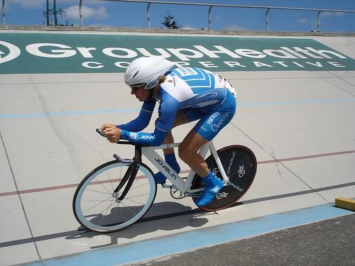
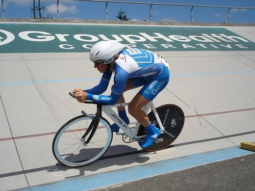
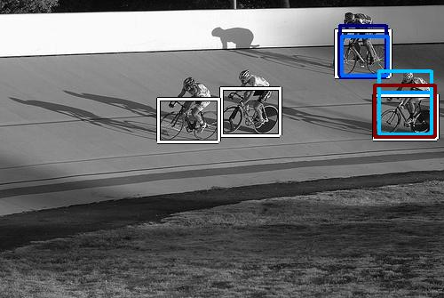

0.579900

0.611092

0.615264

0.615421

0.627098

0.682370

0.702737

0.736870

0.765679

0.778641
| Target image  | 0.579900 | 0.611092 | 0.615264 | 0.615421 | 0.627098 | 0.682370 | 0.702737 | 0.736870 | 0.765679 | 0.778641 |
Target image |  18848.199219 |  16532.929688 |  14608.230469 |  13564.058594 |  12289.916992 |  11350.053711 |  10457.568359 |  9062.930664 |  6452.253418 |  6243.076660 |
Target image |  14769.840820 |  13240.120117 |  13205.362305 |  11627.926758 |  11441.361328 |  11334.537109 |  10613.638672 |  10421.791992 |  8670.853516 |  7751.271484 |
Target image |  18528.888672 |  15319.365234 |  15200.707031 |  12182.450195 |  11366.145508 |  11180.539062 |  11006.301758 |  10493.949219 |  8833.123047 |  8696.363281 |
Target image |  18605.787109 |  15084.712891 |  12721.905273 |  12556.131836 |  10816.041016 |  10611.416016 |  10054.087891 |  9732.724609 |  9239.601562 |  9075.645508 |